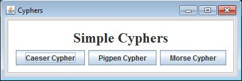
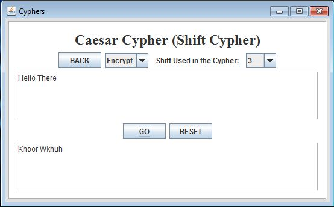
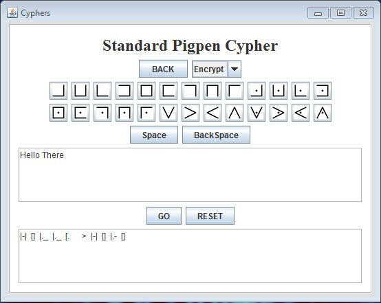
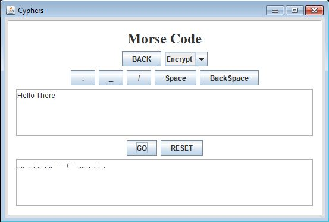

Simple Cyphers Application
 This is the first page for the application which three choices with corresponding buttons. The Caeser Cypher button will bring up the Caesar Cypher page. The Pigpen Cypher button will bring up the Pigpen Cypher page. The Morse Cypher button will bring up the Morse Cypher page.
 This is the Caesar Cypher page where the user can encrypt and decrypt using this simple shift cypher. This is one of the simplest kind of substitution cyphers using a set shift on an alphabet; so each letter has a corresponding letter in the same alphabet a set number of positions away. The BACK just redirects the user back to the main page. The user selects to either to encrypt or decrypt with the Encrypt/Decrypt dropdown and selects the shift with the Shift dropdown. Then the user inputs information in the top text field and presses GO to get the output. The RESET button clears the text field.
 This is the Standard Pigpen Cypher page where the user can encrypt and decrypt using this substitution cypher. This is a very simple kind of substitution cypher using a set of symbols that replace the letters in the alphabet. There are different kinds of Pigpen Cyphers but this is one of the simplest kind. The BACK just redirects the user back to the main page. The user selects to either to encrypt or decrypt with the Encrypt/Decrypt dropdown. If the user selects decrypt they can input the Pigpen using the symbol buttons. If the user selects encrypt they can input the plaintext in the top text field. Once the user inputs information they can press the GO button to get the output. The RESET button clears the text field.
 This is the Morse Code page where the user can encrypt and decrypt using this substitution cypher. This is another simple kind of substitution cypher, where each character in the alphabet has a combination of dots and dashes associated with it. There are different kinds of Morse Code but this is one of the simplest kind working only with the 26 character alphabet. The BACK just redirects the user back to the main page. The user selects to either to encrypt or decrypt with the Encrypt/Decrypt dropdown. If the user selects decrypt they can input the Morse Code using the symbol buttons. Each character has a space between it and the next, every word has a slash (surrounded by spaces) between it and the next. If the user selects encrypt they can input the plaintext in the top text field. Once the user inputs information they can press the GO button to get the output. The RESET button clears the text field.